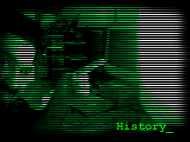

|  | While the rest of TEXTFILES.COM is about archiving and saving the textfiles of the 1980's, this section is about up-to-date essays and commentary about that time. We're looking for perspective here; you were young when these files made their debut, and now that the digital age is here, what do you look back and feel? |
The purpose of the history section is for people who lived through the "Golden Age" of BBSes to write about their experience. They can write about it from the point of view of someone looking back, or they can try to recreate the feelings they had when they went through it in childhood (or early adulthood).
A real nice bonus would be if people who wrote some of the textfiles on this site could cross-reference them and discuss what they were trying to achieve with the file, or give some context and perspective to the time the file was written.
| Filename |
Size |
Description of the Textfile |
|||||||||||||||||||||||||||||||||||||||||||||||||||||||||||||||||||||||||||||||||||||||||||||||||||||||||||||||||||||||||||||||||||||||||||||||||||||||||||||||||||||||||||||||||||||||||||||||||||
EVILEXIDY| Mirror of Apple 2 Memory Page by Evil Exidy (August, 2005) | It is rare that I am compelled to mirror an entire page of history, including graphics, but this is one of the best compilations of someone's apple memories I've seen. | ||||||||||||||||||||||||||||||||||||||||||||||||||||||||||||||||||||||||||||||||||||||||||||||||||||||||||||||||||||||||||||||||||||||||||||||||||||||||||||||||||||||||||||||||||||||||||||||||||||
1ststop.txt | 5042 | Tales of the 1st Stop BBS in New Zealand, by Thomas Kanara (May 26, 2011)
| alancasterteen.txt | 5188 | A Lancaster Teen Remembers BBSes (February 6, 2008)
| apsnet.txt | 3620 | History of the APSNET BBS, by Russ Dale (2003)
| basehead.txt | 38319 | Eight Years of Glory *sic* a.k.a. How I Learned To Stop Worrying And Love The Scene a.k.a. Babehead 2: A Tracker In The City, by Basehead
| bitbucket.txt | 3528 | Lee Manning's memories of the Bit Bucket BBS. (November 12, 2012)
| c0dez.txt | 63056 | Diary of a C0dez Kid, by Dark Sorceror (February 20, 2001)
| cgo.txt | 9819 | CGO's BBS Story (July 18, 2013)
| chickenheadbbs.txt | 22139 | The BBS Universe from the Perspective of a Simple Pleb, by Chickenhead (July, 2004)
| crazy.txt | 3940 | The Legend of the Crazy Horse BBS, by Tim Grzechowski (November, 2004)
| cybrtrsh.txt | 37385 | Cyberthrash (Story)
| dalive | 5273 | "Dead Alive" by the Extremist, about the way BBSes changed with the Internet (March 12, 2000)
| deadlysins.txt | 10747 | The Days of the Deadly Sins BBS, by Sysop Edward Crouser (2002)
| dhobbs.txt | 4856 | A Brief Story of a Hacker, by Derek Hobbs (August 11, 2010)
| drake.txt | 4832 | I was a Teenage Hacker, by Frank Drake (May 1, 2006)
| draxamus.txt | 4235 | I Was Just Thinking, by Draxamus (June, 2005)
| exidy.txt | 6273 | The Adventures of Evil Exidy and his Apple II Computer
| exylic.txt | 4650 | Some BBS Memories by Exylic Xyth (September 20, 2005)
| firescape.txt | 10781 | From the BBS Backroads to the Information Super Highway (or Where Did All The BBSes Go?!?) by Fire Escape
| goldsmith.txt | 5937 | The Tale of Goldsmith, by Ryan C. Smith (September, 2012)
| golnar.txt | 15990 | BBS Life in the 1980's by Scott (Golnar/Mr. Pez) (March, 2000)
| hack7.txt | 52648 | Computer Hackers: Rebels with a Cause, by Tanja S. Rosteck (April 27, 1994)
| hackingcracking.txt | 87956 | The History of Hacking and Cracking, by Hack3r02 (2007)
| hackmorality.txt | 83627 | Hacking Morality, by Timothy Campbell (1995)
| happyhack.txt | 10796 | What in the World is a Happy Hacker BBS? By David Bucci (2001)
| haynes.txt | 8663 | Letter from Scott Haynes - Running The Round Table BBS (March 2014)
| hermsys.txt | 2348 | What Are Hermes Sysops? (November 1, 2001)
| heroic.txt | 2027 | Memories from John Touzios (January, 2006)
| iremember | 3093 | I remember Those Days, by raindog151 (March 28, 2000)
| iwasthere.txt | 5174 | I Was There! By Frank Yantosca (Februayr, 2008)
| jayjay.txt | 7505 | JayJay's Story (The History of T-Net) by John Hrusovszky (2001)
| jimhood.txt | 9846 | C-Net and the MajorBBS, by James Hood (February, 2002)
| jon.txt | 4822 | Jon's Story of His Time on the BBSes (October 7, 2001)
| kilroy | 2929 | My experiences, by King Kilroy (May 17, 2000)
| lansing.txt | 5992 | Some Memories of Lansing Michigan BBSes, by Robin Hood (Jason Artman) (December, 2005)
| lifeonledge.txt | 19195 | Ten Years on the Ledge, by Joseph Sheppard of the Ledge PC-Board BBS (2004)
| lipkovits.txt | 13525 | Some BBS Memories by Rowan Lipkovits (May 1, 2005)
| mindvox | 66115 | Mindvox: The Overture (Voices in My Head) by Patrick Karel Kroupa (Lord Digital)
| minn.txt | 21622 | Adventures in BBSing: BBSing Nostalgia in the Twin Cities. from Sash (2000)
| mmm.txt | 5643 | The BBS Story of Mean Mister Mustard (September 6, 2011)
| modemlife.html | 21331 | Thoughts on "The Modem Life: Is it Really Worth it?" by Bryan Nomad (January 19, 2002)
| modemwld.txt | 11323 | The Modem World, by Charles P. Hobbs of the Blue Cafe (2000)
| mog-history | 25260 | A History of BBSes and BBSing from 1990 to the Present, by Mogel (February, 2000)
| moore.txt | 7991 | Fonts of Youth, by Michael Moore (1994)
| msorrow | 41151 | The Story of Midnight Sorrow, by Michael Waas (1991-Present)
| namaste.txt | 3707 | An Oral History of Alternative Lifestyles BBSes and Other Facts, from Namaste Master (October, 2004)
| nameisreo.txt | 22043 | My Name is Reo: A Look at How the Electronic Me Was Born, by Tom Hare (July 7th, 2000)
| necropls.txt | 8134 | The BBS Scene of Canton, Ohio, by Tom Bryant (September 3, 2001)
| netmask.txt | 4777 | What are these things that the old guys talk about... BBS's? by Netmask (May, 1999)
| olson6502.txt | 15021 | Memories of Computers from Chris Olson (July 16, 2013)
| onan.txt | 8337 | About the T.A.R.D.I.S. BBS, by Thomas O'Nan (November 17, 2006)
| pat.txt | 6049 | My "Old Days Rant" by Patrick Guenette (June 18, 2001)
| phxbbs-m.txt | 36260 | A History of the Golden Age of the Phoenix, AZ BBS Scene, by Mirage (March 25, 2004)
| planetzero.txt | 6412 | The History of the Planet-Zero BBS, by Benjamin Hauger (October, 2003)
| proudlyserve.txt | 20578 | Excerpt from "Proudly Serving My Corporate Masters: What I Learned in Ten Years as a Microsoft Programmer" by Adam David Barr (2000)
| radexposed.txt | 12368 | Radioactive Aardvark Dung Exposed, by Mercuri of RAD (May 9, 2001)
| reeves.txt | 17141 | Memories of a BBS Childhood, by Steve Reevers (January, 2003)
| sawyer.txt | 8981 | Memories of the USS Enterprise BBS by Mike Sawyer (October, 2002)
| silverclaws.txt | 3872 | Xao Silverclaw's Story of Barking Pizza (August, 2004)
| stressman.txt | 13862 | Some Memories and a BBS List, by Justin Stressman (July 1, 2005)
| thievco.txt | 20677 | The Story and the Truth about the Thievco BBS (And Computer Security in General) by the Blue Boar (August 28, 1998)
| three.txt | 6749 | The Story of Two BBSes, Three BBS Names and Three Sysops, by Bill Mertens (August 15, 2001)
| ukunderg.txt | 23530 | A Brief History and Guide to the UK Underground Scene, by Paris of Soljo Publishing (August, 2004)
| unicorn.txt | 4382 | Being a Unicorn, from Michelle Boasten
| whatbbs | 4816 | The Internet's Full Effect on BBS Use, by Mark Robbins of the Second Sanctum BBS (January 1, 1996)
| wil.txt | 13590 | BBS Memories, from Wil (November 14, 2009)
| yuban.txt | 5465 | Memories of Bowling for Jesus, by Reverend Ed Yuban (January 19, 2003)
| |
| There are 66 files for a total of 1,052,943 bytes. |
| There is 1 directory. |
I hope to have this section grow to be one of the most complete and popular parts of this site. If you want to contribute, please don't hesitate to write to me.